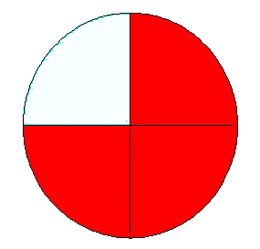
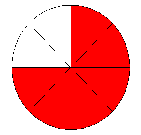

Regardons les schémas représentatifs des deux fractions ci-dessous:
Definitions
Let's look at the representative diagrams of the two fractions below:
3/4
6/8


Il est clair que la partie représentée en rouge des deux côtés est la même. Formellement les deux fractions ne sont pas égales au sens ensembliste strict le (3,4) est distinct du couple (6,8), mais elles représentent la même portion du total. Cela est vrai, plus généralement de deux fractions p/q et kp/kq où k est un multiplicateur non nul (les parties sont k fois plus petites, mais il y en a k fois plus. La condition enoncée ci-dessus est une condition suffisante pour que p/q et p'/q' représentent la même proportion, mais elle n'est nullement nécessaire. Prenons par exemple 4/6 et 6/9 si on les 'convertit' en fractions de dénominateur 18 elles donnent toutes les deux 12/18. Donnons maintenant une première définition.
définition
Deux fractions seront dites 'équivalentes' si elles peuvent être converties par multiplication du numérateur et du dénominateur en des fractions strictement égales.
Notons pour le moment cette relation ≡ , il s'agit évidemment d'une . p/q ≡ p'/q' ⇔ ∃ (k,h) ∈(ℕ × ℕ) | kp=hp' et kq=hq' Cherchons une pour que deux fractions représentent la même proportion. Remarquons que les deux égalités ci-dessus entraînent en multipliant la première par q' et la seconde par p' que: pq'=qp' , plus précisemment kpq'=kqp' mais on peut simplifier par k qui est non nul ( ℤ n'a pas de diviseurs de zéro). Il est clair qu'inversement cette condition (pq'=qp') est suffisante pour l'équivalence de deux fractions au sens précédent. En effet la fraction p/q est convertible en pq'/qq' et la fraction p'/q' est convertible en p'q/qq' et on a bien l'égalité stricte pq'/qq' = p'q/qq' dans le cas où justement pq'=qp'. On peut donc remplacer la définition de l'équivalence de deux fractions par cette définition plus simple: p/q ≡ p'/q' si et seulement si pq'=qp'. Voici maintenant une autre notion importante:
définition
Une fraction est dite 'irréductible' si son numérateur et son dénominateur sont .
Pour une fraction donnée p/q introduisons le d=pgcd(p,q) et considérons la fraction (p/d)/(q/d), cette fraction est irréductible et représente la même chose que p/q au sens précédent.
théorème
On peut donc toujours associer à toute fraction p/q une fraction irréductible qui lui est équivalente.
définition
Ce procédé s'appelle la 'simplification' de la fraction p/q.
En outre ce procédé conduit à un résultat unique:
théorème
Si p/q et p'/q' sont équivalentes et irréductibles alors p=p' et q=q'.
démonstration
En effet on a pq'=qp' donc p divise qp' comme p est premier avec q, p divise p' par le . De la même façon q divise q'. On a donc p'=kp et q'=hq mais comme pq'=qp' on a kpq'=hpq' donc h=k donc p'=kp et q'=kq et on a forcément k=1 puisque p' et q' sont premiers entre eux.
Notons maintenant un abus d'écriture contraire aux conventions strictes de la théorie des ensembles mais tout à fait courant et sans aucun danger (nous le verrons plus tard).
définition
L'équivalence des fractions sera notée par le symbole d'égalité:
p/q=p'/q' ⇔ pq'=qp'
Vous pouvez maintenant générer quelques exemples:
It is clear that the part shown in red on both sides is the same. Formally the two fractions are not equal in a quite strict sense the (3.4) is distinct from the ordered pair (6.8), but they represent the same portion of the total. This is true more generally of two fractions p/q and kp/kq where k is a nonzero multiplier (the parts are k times smaller, but there are k times more. The above condition is a sufficient condition so that p/q and p'/q' represent the same proportion, but it is not not at all necessary. Let's take for example 4/6 and 6/9 if we 'convert' them into fractions of denominator 18 they both give 12/18. Let us now give a first definition.
definition
About two fractions, we will say that they are 'equivalent' if they can be converted by multiplying the numerator and denominator into strictly equal fractions.
Let us note for the moment this relation ≡ , it is obviously an . p/q ≡ p'/q' ⇔ ∃ (k,h) ∈(ℕ × ℕ) | kp=hp' et kq=hq' Let's look for a so that two fractions represent the same proportion. Note that the two equalities above result in multiplying the first by q' and the second by p' in: pq'=qp' , more precisely kpq'=kqp' but we can simplify by k which is nonzero ( ℤ has no divisors of zero). It is clear that conversely this condition (pq'=qp') is sufficient for the equivalence of two fractions in the preceding sense. Indeed the fraction p/q is convertible into pq'/qq' and the fraction p'/q' is convertible into p'q/qq' and we have the strict equality pq'/qq' = p'q/qq' in the case where precisely pq'=qp'. We can therefore replace the definition of the equivalence of two fractions by this simpler definition: p/q ≡ p'/q' if and only if pq'=qp'. Now here is another important concept:
definition
A fraction is said 'irreducible' if its numerator and denominator are .
For a given fraction p/q let us introduce the d=gcd(p,q) and consider the fraction (p/d)/(q/d), this fraction is irreducible and represents the same as p/q in the previous sense.
theorem
We can therefore always associate to any fraction p/q a fraction irreducible which is equivalent to it.
definition
This process is called the 'simplification or reduction' of the fraction p/q.
Furthermore, this process leads to a unique result:
theorem
If p/q and p'/q' are equivalent and irreducible then p=p' and q=q'.
démonstration
Actually we have pq'=qp' so p divides qp' as p is prime with q, p divide p' by . In the same way q divides q '. So we have p '= kp and q' = hq but as pq '= qp' on a kpq '= hpq' so h = k so p '= kp and q' = kq and on a necessarily k = 1 since p 'and q' are prime to each other.
Note now an abuse of writing contrary to strict conventions of set theory but quite current and without any danger (we will see this later).
definition
The equivalence of fractions will be denoted by the equality symbol:
p/q = p'/q' ⇔ pq'= qp'